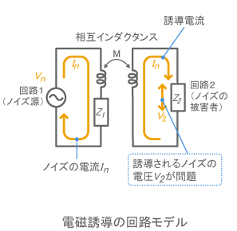

3.4. 電磁誘導
一般に配線に電流を流すと、周囲に磁界を作ります。この磁界によって下図のように周囲の回路が影響を受ける現象を、電磁誘導と呼びます。 回路的には、2つの回路の間の相互インダクタンスMによって、対象の回路に誘導電圧が発生すると考えることができます。図で、Mがつながっている インダクタ（コイル）は特定の部品を指すのではなく、回路の配線などが作る電流ループのインダクタンスを表しています。 電磁誘導によるノイズの電圧V2は、静電誘導の場合と同様に、ノイズ源の電流Inが大きいほど、相互インダクタンスMが大きいほど、大きくなります。 また、相互インダクタンスMは、ノイズ源と対象回路の間の距離が小さいほど、電流が並行している部分が多いほど、大きくなります。
上記は以下サイトから抜粋引用しています。